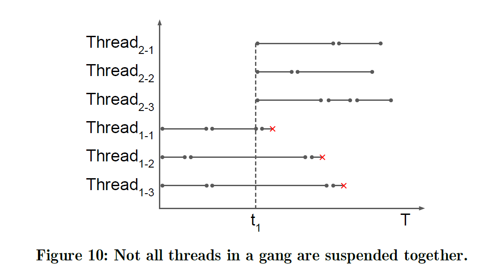

核心思想
这是一篇关于GPU资源分配调度的paper, 出发点比较新颖。考虑的是在DNN inference过程中单个GPU上的不同DNN 模型的推理遇到的挑战，例如常用的TF-Serving就会导致运行时间不可预测的问题。
本文的出发点是在TensorFlow node这一级别上对其进行处理。首先对于一个job的DNN模型请求进来之后，经过profiler对它运行时间进行一个估计，确定time-slice，而后利用scheduler过程对拿到GPU使用权的job进行一个任务分配。
总结来说，就是实现了尽量减少消耗的前提下，提供一个可预测性的serving system。以下PART I，介绍背景知识引出我们说的传统TF-serving存在的问题。PART II, profiler的过程以及需要注意的点。PART III, scheduler的过程。
Main Content
I. Backgroud
I.1 GPU相关知识
因为paper是关于GPU的资源调度的，所以自然要了解一些GPU的基础知识。仔细思考不难问出以下几个问题。
什么是TensorFlow node级别？这个粒度级别在GPU调度里是属于什么层次的？
答： TensorFlow node就是我们在DNN推理过程当中的一个个数字运算操作，例如对于一个 w*x + b 中的乘法以及加法就是一个node， 图计算过程中对于不同的操作有的可以在CPU上进行运行，而有的则需要在GPU上运行。所以一个模型推理过程中会产生成千上万个node。而一个node则会调用一个或者很多个kernel。文中提到的thread，block，kernel，node，context分别是什么意思？
答： node的含义刚刚解释过了，而一个node会调用多个kernel。一个GPU kernel则代表了一个基本的数据并行计算。其中一个kernel会被分成很多个thread，而这些thread会group到一个thread block中，而每个block会被分配到相同或者不同的streaming multiprocessor（sm）上。
GPU硬件结构上最基本的处理单元是streaming processor(sp), 可以看作是一个thread，即一个sp对应一个thread。而warp当中包含多个sp，每个warp当中的sp是一起工作的，执行相同的指令，可以看做是最小的执行单位。多个warp加上其他的存储资源（寄存器，共享内存）构成一个sm，对应一个block。一
所以GPU中的软件概念可以看做是：kernel->grid->block->warp->thread
其中，kernel是在GPU上执行的程序，一个Kernel对应一个Grid。每个kernel可以看做是一个程序，对于每个DNN 模型一般包含多个kernel。TF-serving会将这些kernel以队列的形式交给GPU driver，然后任由它底层硬件如何求调度资源运行。一个block中的thread可以彼此同步，快速交换数据。而context就类似于我们通常所说的进程了，包含了GPU驱动程序中所有的资源以及行动。I.2 TF-serving
TF-Serving就是一个对用户请求进行反应（模型推理）并返回结果的过程。TF-serving是如何工作的呢？ TF-serving的操作对象也是TensorFlow node，对于每一个模型执行以下的操作。
1
2
3
4
5
6
7
8
9
10
11
12
13
14
151: function Session::Run(modelName, input)
2: srInfo = new SessRunInfo(sessId, runId)
3: root = getRoot(modelName, input)
4: Process(root, srInfo)
5: function Process(root, srInfo)
6: bfsQueue.push(root)
7: while !bfsQueue.empty() do
8: curNode = bfsQueue.pop()
9: compute(curNode)
10: for childNode in curNode.children() do
11: if !childNode.kernelIsAsync() then
12: bfsQueue.push(childNode)
13: else
14: thread = threadPool.fetch()
15: thread(Process(childNode, srInfo))
同步即放进队列，不需要GPU；异步即需要另外一个线程执行，需要GPU。一个model执行时会产生很多的thread，我们把这个thread的集合叫做gang。所以在运行多个不同的models的时候，TF-serving默认是能处理的。但是因为程序员无法控制底层的调度的顺序，所以导致相同的job可能有不同的运行结束时间。
I.3 Multiplex ways
The queue permits the driver to efficiently multiplex these kernels both
- spatially (assign different kernels’ thread blocks to different stream multiprocessors)
- temporally (switch between different kernels within the same stream multiprocessor).
但是因为推理DNN过程当中，通常情况下会超出GPU的并行承受度。剩余很小的空间利用spatial multiplexing进行不同用户的request之间的多路复用了。所以本文只考虑第二种方式。
II. Profiler
如果想对时间进行切片，确定时间片的大小至关重要，显然对于不同的模型所采用的时间片应当是不同的。对于一个模型，Tensorfolw提供了一个cost profiler 可以用来在线的绘出DNN运行轮廓。但是在线的延迟过高，所以这篇paper建立了一个线下的轮廓绘制。
大概步骤是：Olympian会拿一些正常的batch size进行一个试运行，利用线性回归来预测其他的batch size的结果。
对于
\[T_j=\frac{C_j} {D_j}\]
C是通过API函数对每个node预估求和得到的结果，D是在GPU上的运行的实际时间， Q是我们取的quantum，T则是the cost accumulation threshold. Q值根据不同的DNN得出的值，估计的值不会高于overhead tolerance.
III. Scheduler
当每个job随着scheduler注册时，的session被分配一个令牌，存储在srInfo中。1
2
3
4
5
6
7
8
9
10
11
12
13
14
15
16
17
18
19
20
21
22
23
24
251: function Session::Run(modelName, input)
2: srInfo = new SessRunInfo(sessId, runId)
3: root = getRoot(modelName, input)
4: scheduler.register(srInfo)
5: cumulatedCost = 0
6: Process(root, srInfo, cumulatedCost)
7: scheduler.deregister(srInfo)
8: function Process(root, srInfo, cumulatedCost)
9: bfsQueue.push(root)
10: while !bfsQueue.empty() do
11: curNode = bfsQueue.pop()
12: scheduler.yield(srInfo)
13: compute(curNode)
14: if curNode.isGPUNode() then
15: cumulatedCost += curNode.cost()
16: if cumulatedCost ≥ threshold then
17: cumulatedCost −= threshold
18: scheduler.updateTokenInfo(srInfo)# calls the scheduler to trigger a scheduling decision,到这步的时候，就要决定下一步应该是哪个job占用gpu了。
19: for childNode in curNode.children() do
20: if !childNode.kernelIsAsync() then
21: bfsQueue.push(childNode)
22: else
23: thread = threadPool.fetch()
24: thread(Process(childNode, srInfo, cumulated-
Cost))
即使达到触发一个调度决策的条件，然后更新令牌需要时间。正在运行的job的其它线程也可能会继续运行下去。

Questions in the reading process.
- 传统的TF-serving在调度DNN模型的时候会面临两个挑战：1， 如何调度 2， 切换的消耗尽量小。
1.1 传统模式下一个GPU是能做到同时跑多个DNN models吗？如果能，是怎么做到的？
答： 可以，是采用抢占式的GPU运行，但是随着大量并行程序的运行context会变得很大。context很大会带来什么问题？
1.2 Olympian能实现单个GPU在多个DNN 任务上的公平共享，那其他的抢占方式呢？
答： 文中只是给了一个模拟实验证明以后这方面的工作可行。 - 能够有效降低GPU资源在不同的model上的切换的耗用，是通过利用GPU计算能力的可预测性来勾勒GPU 资源利用的离线模式。 如何勾勒的？ 不同model切换的耗用是因为什么产生的，这篇paper提出的模型是利用这种可预测性做了什么从
- 传统的TF-serving为什么相同的计算需求会导致完全不同的运行时间？
GPU中kernel，block以及thread都是软件级别的概念，一个kernel包含多个block，一个block包含多个thread，每个kernel可以看做是一个程序，对于每个DNN 模型一般包含多个kernel。TF-serving会将这些kernel以队列的形式交给GPU driver，然后任由它底层硬件如何求调度资源运行。所以对于不同用户的同一类型的kernel运行的时间也可能完全不同。